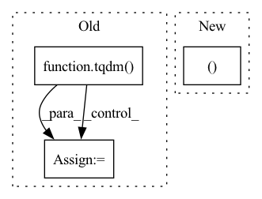

Pattern ID :16908
Before Change
agreed = 0
for i in tqdm( range(1, points)) :
// Case: Torchvision Dataset
x, y = test[i]
substitute_result = int(query(substitute_model, x, substitute_size))
victim_result = int(query(victim_model, x, victim_size))After Change
print(test_data.size())
x_data, y_data = process_data(test_data, None)
// for x in x_data:
//substitute_result = int(query(substitute_model, x, substitute_shape))In pattern: SUPERPATTERN
Frequency: 3
Non-data size: 3
Instances Fragment ID: 56966612
Project Name: trailofbits/privacyraven
Commit Name: 5ebe314e32ff094514f3305181e9e89fa920acc2
Time: 2020-11-30
Author: suhashussain1@gmail.com
File Name: src/privacyraven/utils/evaluate.py
M Class Name: AnonimousClass
N Class Name: AnonimousClass
M Method Name: label_agreement(5)
N Method Name: label_agreement(7)
M Parent Class:
N Parent Class:
M File Name: src/privacyraven/utils/evaluate.py
N File Name: src/privacyraven/utils/evaluate.py
M Start Line: 7
M End Line: 45
N Start Line: 7
N End Line: 21
Before Change
def plot_confusion_matrix(model, test_loader, save_title, device, normalize="all"):
y_true = y_pred = []
model.eval()
for (inputs, labels) in tqdm( test_loader, leave=False) :
intputs = inputs.to(device)
outputs = model(inputs)
outputs = outputs > 0
y_true.append(labels)
y_pred.append(outputs)After Change
def plot_confusion_matrix(model, test_loader, save_title, device, normalize="all"):
y_true, y_pred = predict(model, test_loader, device)
conf_mat = confusion_matrix(y_true, y_pred, normalize=normalize)
axis_labels = ("Benign", "Malware")
df = pd.DataFrame(conf_mat, index=axis_labels, columns=axis_labels) Fragment ID: 56966625
Project Name: jaketae/deep-malware-detection
Commit Name: e7c0f884cee6907e93c7c379e5c8519fcc2d4432
Time: 2020-11-21
Author: jaesungtae@gmail.com
File Name: utils.py
M Class Name: AnonimousClass
N Class Name: AnonimousClass
M Method Name: plot_confusion_matrix(5)
N Method Name: plot_confusion_matrix(5)
M Parent Class:
N Parent Class:
M File Name: utils.py
N File Name: utils.py
M Start Line: 37
M End Line: 48
N Start Line: 36
N End Line: 36
Before Change
detector = get_haarcascade()
eye_detector = get_eye_cascade()
for start_frame_index in tqdm( range(0, num_frames, sliding_window_stride)) :
end_frame_index = start_frame_index + clip_size
if end_frame_index > 3000:
break
// print(f"start_idx: {start_frame_index} | end_idx: {end_frame_index}")
spatio_temporal_map = np.zeros((clip_size, 25, 3))
frames_in_clip = frames[start_frame_index:end_frame_index]
for idx, frame in enumerate(frames_in_clip):
"""After Change
// stacked_maps is the all the st maps for a given video (=num_maps) stacked.
stacked_maps = np.zeros((num_maps, config.CLIP_SIZE, 25, 3))
// processed_maps will contain all the data after processing each frame, but not yet converted into maps
processed_maps = np.zeros((num_frames, 25, 3 ))
processed_frames = np.zeros((num_frames, output_shape[0], output_shape[1], 3))
map_index = 0
Fragment ID: 56966638
Project Name: anweshcr7/rhythmnet
Commit Name: 465030f9efb5f86a94572239a5147c1c667f24fd
Time: 2021-02-23
Author: anwesh.marwade@beyondsports.nl
File Name: src/utils/data_parser.py
M Class Name: AnonimousClass
N Class Name: AnonimousClass
M Method Name: preprocess_video_to_st_maps(3)
N Method Name: preprocess_video_to_st_maps(3)
M Parent Class:
N Parent Class:
M File Name: src/utils/data_parser.py
N File Name: src/utils/data_parser.py
M Start Line: 193
M End Line: 284
N Start Line: 201
N End Line: 309